SnapKV：大模型在开始生成之前，就知道你要找什么
SnapKV: LLM Knows What You are Looking for Before Generation
阅读状态、进度与收藏只保存在你的浏览器里。
逐节精读
这部分按论文的章节顺序，用本站自己的话把整篇论文从头讲一遍。读懂某个概念需要的背景知识，会在第一次用到它之前单独讲清楚（青色框）。每个结论都尽量说出“因为什么、所以什么”。论文以 CC BY 4.0 许可发布，所以原图直接放在讲到它的地方，并说明这张图怎么看；原图没画到的概念，用本站的示意图补上。标“推算”的数字是本站根据论文数据或公开的模型配置算出来的，标“从图上读出”的数字是对原图的目测，二者都不是论文原话。本页以 arXiv v2（2024-06）为主线；NeurIPS 正式版删掉了 Command-R 实验、新增了超参数敏感性和预填充开销分析，这些差异在对应位置单独标出。每节末尾有英文原文的链接。
0 导读：这篇论文解决什么问题
现在的大模型动辄支持 128K、甚至上百万 token 的上下文。用户会把一整份财报、一个代码仓库，或者检索回来的几十篇文档塞进提示，最后再问一个问题。模型回答之前，要先把这段长提示完整地算一遍（这一步叫预填充），并把每一层、每个 token 的 key 和 value 向量存下来（这份数据叫 KV 缓存）；之后每生成一个 token，都要把这份 KV 缓存从显存里整个读一遍。提示越长，KV 缓存越大。它一方面占显存，让一张卡同时能服务的请求变少；另一方面拖慢每一步解码，因为每一步要读的数据变多了。
在这篇论文之前，已经有一些“KV 淘汰”方法：StreamingLLM 只留开头几个 token 和最近的一段，H2O 留累计注意力最高的那些 token。但它们主要是为“边生成边淘汰”设计的，没有认真处理“提示本身很长，而答案只依赖其中一小部分”这种场景。SnapKV 的出发点是一个观察：对每个注意力头来说，生成答案时会重点看提示里的哪些位置，在生成开始之前就已经能看出来。办法是看提示最后一小段 token（论文叫观察窗口，通常正好是用户的问题）在注意力里看向了哪里。于是 SnapKV 在预填充结束时“拍一张快照”：每个头让观察窗口投票，选出提示里最重要的一批位置，再用池化把这些位置周围的邻居也一起留下，其余的 KV 直接丢掉。之后的解码只在这份压缩过的 KV 上进行。
这个方法不需要训练，只要改几行代码就能接进 HuggingFace 的模型。论文在 LWM-Text-Chat-1M 上报告了三个数字：输入 16K、批大小 2 时，每个 token 的解码延迟降到约 1/3.6；同样批大小下，单张 A100-80GB 能处理的最长输入从 16K 变成 131K（约 8.2 倍）；把提示 KV 压到 1024 个位置时，大海捞针测试在长达 380K 的文档里几乎都能找对。在 LongBench 的 16 个任务上，把提示 KV 压到 1024–4096 个位置，四个模型的平均分比完整 KV 只低 0.1–2 分（推算），而且明显好于同样条件下的 H2O。
代价也要先说清楚。SnapKV 是有损的，摘要类任务掉分最明显；它不减少预填充的计算，首个 token 出来的时间不变；它挑出来的 KV 是针对“这一个问题”的，换一个问题可能就不够用；论文的速度数字是在 HuggingFace 的实现上测的，不是在 vLLM 这类推理引擎上。这些都会在后面逐一展开。
读完这部分，你应该能回答这几个问题：
- KV 缓存为什么随提示长度线性增长？提示很长时，显存和解码速度分别卡在哪里？
- StreamingLLM、H2O 这些更早的淘汰方法凭什么能工作，放到“长提示、短回答”的场景为什么不够？
- 为什么提示末尾的观察窗口能预测生成时的注意力？论文的证据有多强？
- 投票、池化、拼接这三步具体怎么算？官方代码和论文的描述有哪些不同？
- “3.6 倍”“8.2 倍”“380K”分别是在什么条件下、和谁比出来的？换到推理引擎上还剩多少？
- 按问题压缩的做法在多轮对话、前缀缓存和 GQA 模型上会遇到什么问题？后来的工作怎么改进？
1 引言：长提示让 KV 缓存成了瓶颈
模型每生成一个新 token，每一层的注意力都要拿这个 token 的 query 去和前面所有 token 的 key 比相似度，再按得到的权重把前面所有 token 的 value 加权求和。前面那些 token 的 key 和 value 在之前的步骤里已经算过了，系统就把它们存下来重复使用，这份数据就是 KV 缓存（它是怎么来的、为什么必须存，见 vLLM 精读 §2.2）。
每个 token 在每一层、每个 KV 头上都要存一个 key 向量和一个 value 向量，所以一个 token 的 KV 缓存有多大，可以直接算出来：
论文做速度实验用的 LWM-Text-Chat-1M 沿用 LLaMA-2-7B 的结构：32 层，32 个注意力头，每头 128 维。用 FP16 存储时，一个 token 要 \(2\times32\times32\times128\times2=524{,}288\) 字节，约 0.52 MB（推算）。这个数和提示长度无关，所以 KV 缓存随提示长度线性增长：16K 个 token 的提示约 8.6 GB，128K 约 68.7 GB，380K 约 199 GB，远远超过一张 80 GB 显卡（推算）。
解码阶段每一步只为每条请求生成一个 token，计算量很小，但要把模型的全部权重和这条请求的全部 KV 缓存从显存读一遍。读数据花的时间远多于计算的时间，所以解码速度基本由“每一步要读多少字节”决定，这种情况叫带宽受限（roofline 的讲法见 DistServe 精读和推理基础页）。
提示短的时候，每一步主要在读权重，KV 缓存只占很小一部分。提示一长，KV 缓存的字节数会追上甚至超过权重。仍以 LWM-7B 为例，权重约 13.5 GB，提示长到约 25,700 个 token 时，KV 缓存就和权重一样大（推算：13.48 GB ÷ 0.524 MB）。从这以后，每一步解码要读的字节数、也就是每一步的时间，几乎随提示长度线性增长。显存容量是同一件事的另一面：KV 缓存占得越多，一批里能同时放的请求就越少，读一遍权重能分摊给的请求也越少，吞吐量随之下降。
所以，只要能在解码开始前把提示的 KV 缓存缩小到一个固定的大小，就能同时解决两件事：每一步读的字节变少，解码变快；每条请求占的显存变少，能放更长的输入或更大的批。SnapKV 做的正是这件事。
怎么用这个计算器：把模型选成 Llama-3-8B，批大小保持 1，把上下文 S 从 2048 拉到 32K、128K，看右侧“每步读取”里 KV 的字节数什么时候超过权重；再把批大小调大，看 KV 读取量怎么成倍增加。计算器里的模型用的是 GQA（每 token 的 KV 只有 LWM-7B 的 1/4），权重又更大（约 16 GB），所以交叉点比上面算的 25,700 个 token 靠后得多，约在 12 万 token 处（推算）。
论文先用几个例子说明长上下文已经是常态：GPT-4 和 Cohere 的 Command-R 支持 128K，Claude-3 支持 200K，Gemini-Pro-1.5 支持 1M。但“支持”不等于“用得起”：提示越长，解码时每一步要在越多的 KV 上算注意力，每步延迟随提示长度线性增长；KV 缓存本身又需要大量显存，抬高了硬件门槛。
已有的 KV 缓存压缩方法大多在解码阶段逐步淘汰新追加进来的 KV，并且缺少长上下文场景下的系统评测。论文认为它们忽略了更现实的问题：在聊天机器人、智能体这类应用里，提示往往是多轮对话、整篇文章或整个代码库，远比生成的回答（一段摘要、一段代码）长，所以真正占显存的是提示的 KV。而压缩提示的难点在于，提示里有大量和当前问题无关的“噪声”内容，压缩时必须保证真正需要的信息一个不丢，否则答案就会出错。
论文的核心发现是：提示里只有一部分 token 携带了生成答案所需的关键信息，而且在整个生成过程中，模型重点关注的始终是这一部分。基于这个发现，作者设计了 SnapKV，列出三点贡献：
- 观察。设计实验回答两个问题：提示里的 token 在生成过程中得到的注意力是否有稳定的模式？这个模式能否在生成开始之前就识别出来？结论是两个都能，论文标题“LLM 在生成之前就知道你要找什么”就是这个意思。
- 方法。据此提出 SnapKV：不需要微调，在预填充结束时按观察窗口的投票，为每个头挑出关键的 KV 位置并压缩缓存，对模型的改动很小。
- 评测。在多个模型和长序列数据集上，SnapKV 的准确率与完整 KV 相当，同时提高了解码速度和显存效率；还用大海捞针测试检验了它在极长输入上的检索能力。
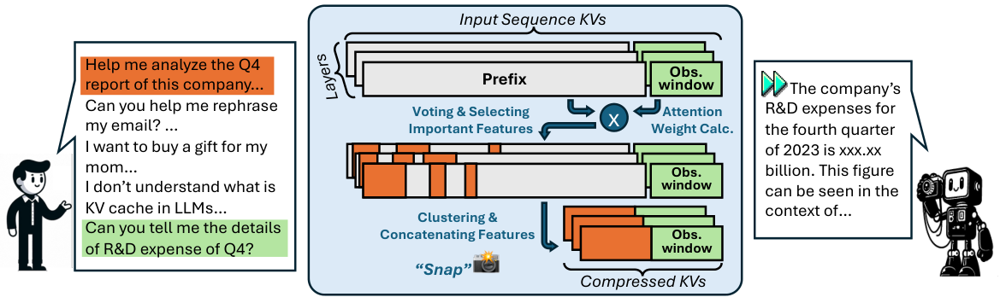
- “免微调”（fine-tuning-free）只是说不改模型权重，不等于无损。被丢掉的 KV 之后再也找不回来；如果后面的生成恰好需要它，模型只能凭剩下的信息去猜。
- SnapKV 只压缩提示的 KV，而且是在预填充算完之后才压缩。预填充本身照常完整计算，所以首个 token 出来的时间（TTFT）不会变短；生成出来的新 token 的 KV 照常追加进缓存，不再淘汰。
2 相关工作：更早的淘汰方法为什么在解码阶段管用，又为什么不够
注意力权重要经过 softmax，所以一个 query 分给所有 key 的权重加起来必须等于 1。即使当前 token 并不需要从前文取什么信息，这份权重也得分出去。StreamingLLM（Xiao 等，ICLR 2024）发现，训练好的模型会把这部分“无处可放”的权重大量堆在序列最开头的几个 token 上，不管它们是什么内容，作者把这些 token 叫作注意力汇（attention sink；更多讨论见 SMELT 精读）。
这解释了一个现象：如果只保留最近一段窗口的 KV（滑动窗口），一旦开头的 token 被挤出窗口，模型的输出就会崩坏；而只要额外留住开头少数几个 token（论文实验里常用 4 个），再加上最近的窗口，模型就能稳定地一直生成下去，作者测到了 400 万 token 以上。代价是中间的 token 全部被丢掉：模型只“记得”开头和最近，没法回答关于长文档中间内容的问题。SnapKV 论文特意引用了 StreamingLLM 仓库的 FAQ，那里明确说它并不扩展模型的上下文，也不会记住被丢掉的内容。
H2O（Heavy-Hitter Oracle，NeurIPS 2023）观察到注意力很稀疏：少数 token 拿走了大部分注意力权重，作者把它们叫作 heavy hitter（“重击者”）。H2O 给每个已缓存的 token 记一个分数，就是它进入缓存以来，每一步的 query 分给它的注意力之和（累计注意力）。缓存满了，就丢掉分数最低的，同时始终保留最近的一些 token。H2O 的摘要报告，只保留 20% 的 heavy hitter，在 OPT-6.7B 和 OPT-30B 上的吞吐量比 DeepSpeed Zero-Inference 和 HuggingFace Accelerate 最多高 29 倍。
Scissorhands（NeurIPS 2023）把这类方法背后的假设说得更直白，叫“重要性持续”（persistence of importance）：某一步被重点关注的 token，之后大概率也会继续被关注，所以只要保留过去一段时间里重要的 token 就够了。FastGen（论文引用的 “Model tells you what to discard”）则先在编码提示时给每个头“画像”，判断它偏好哪种结构（只看局部、只看特殊符号、只看标点、看高频 token 等），再在生成阶段按画像给每个头执行不同的淘汰策略。
这些方法在它们的设定下管用，原因是一致的：生成过程中注意力确实很稀疏，而且一个 token 重不重要，在相邻的生成步骤之间变化不大。所以按历史分数淘汰，丢掉的大多是之后也用不到的 KV。它们的典型评测场景是语言建模困惑度或者生成长度远大于提示长度的任务。
论文对这些方法的批评集中在一点：它们主要压缩的是解码过程中追加进来的 KV，而忽略了提示本身的 KV。具体来说：StreamingLLM 丢掉了中间的 token，也就丢掉了中间携带的信息；H2O 能有效压缩生成阶段追加的 KV，但没有处理提示 KV 的压缩，而后者对显存和计算更关键；FastGen 先画像再在生成阶段淘汰，面临和 H2O 一样的问题；Scissorhands 只盯着生成过程中前面几个窗口里的关键 token，忽视了包含大量必要信息的长提示，可能取不到提示里的细节。论文的总结是：真实应用里提示特别长，又要求准确地从中检索信息，现有方法没有解决这个核心问题。
本站补充一个解释：为什么“累计注意力”不适合用来挑提示里的 KV。如果把 H2O 的打分直接用在一段 1 万 token 的提示上，每个位置的分数是提示里所有 query 分给它的注意力之和。这有两个偏差。第一，因果掩码让第 \(j\) 个位置只能被它后面的 query 看到，越靠前的位置被越多的 query 看到，单凭位置靠前就能攒到更多分数。第二，这 1 万个 query 里绝大多数属于文档本身，它们的注意力反映的是“文档内部为了读懂上下文而互相参照”，而不是“用户的问题需要什么”；真正代表问题的那几十个 query 被淹没在里面。SnapKV 的改动正好针对这两点：只让提示末尾那一小段 query（观察窗口）投票，而且每个 query 的票都是归一化过的权重，所以选出来的是“问题在看哪里”。
3 观察：注意力“看哪里”，在生成之前就定下来了
论文反复说的 attention feature（注意力特征），指的是某一层、某一个头里，提示中的某一个位置，也就是这个位置的那一对 key 和 value。说某个位置“重要”，是指 query 分给它的注意力权重很高。
要衡量“提前挑出来的重要位置”和“生成时真正重要的位置”有多吻合，论文用的是重合率（hit rate，也译作命中率）：生成时真正重要的那些位置里，有多大比例已经被提前挑中。它相当于检索里的召回率，1.0 表示该留的一个都没漏。要注意它只衡量“漏没漏”，不管“挑了多少”：挑得越多，召回率自然越高。所以单看重合率不能判断方法好坏，必须同时知道挑了多少个。
数据。作者从 Ultrachat 里取样。Ultrachat 是一个有 140 万段多轮对话的高质量指令数据集。作者只保留回答长于 512 个 token、提示长于 3K 个 token 的样本。图例里的统计是：3,050 个样本，提示平均 3,263.8 个 token，平均 4.13 轮对话。
实验一：模式能在生成之前看出来吗？作者把每一层提示里的 token 按 128 个一段切成窗口，取最后 20 个窗口。对每个窗口，用其中所有 query 的注意力权重求平均，挑出平均权重高的位置作为“这个窗口认为重要的位置”；再和生成时真正被重点关注的位置比较，算重合率。如果某个窗口挑出来的位置和生成时高度一致，就说明用这个窗口可以提前预测生成时的注意力。
实验二：模式在生成过程中稳定吗？作者把生成的前 512 个 token 按 128 个一段切成 4 个窗口，分别计算“提示最后一个窗口挑出的重要位置”和“每个生成窗口实际关注的重要位置”的重合率。如果从第 1 个到第 4 个生成窗口，重合率都很高而且不下降，就说明在提示末尾挑一次就够了，不需要在生成过程中反复更新。
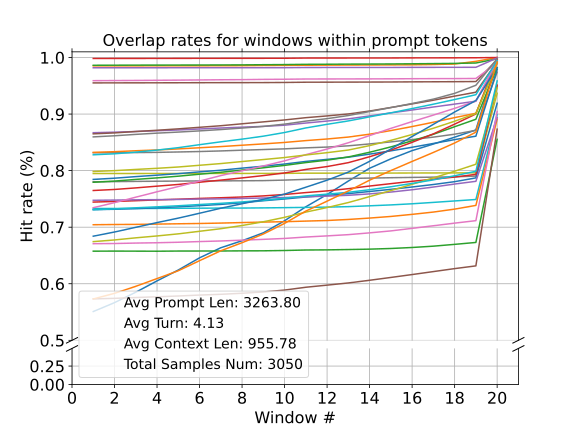
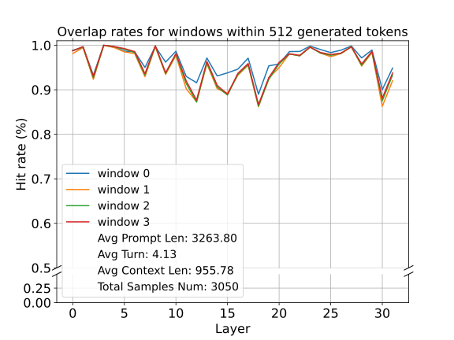
两个实验合起来，就是论文标题的意思：模型在开始写答案之前，提示末尾那一段（通常就是用户的问题和对话模板）已经“看过”了答案需要的位置，而写答案时它基本只回到这些位置去取信息。一个直观的类比是开卷考试：先读题，在书上把和题目相关的段落折个角；之后写答案时，翻的基本就是这几页。既然如此，书的其他部分就可以先收起来。
- §3 没有写用的是哪个模型（图中有 32 层，和 Mistral-7B、LLaMA-2-7B 一致），也没有给出“重要”的阈值 \(\theta\)、每个窗口挑多少个位置。前面说过，重合率随挑选数量上升，不知道挑了多少，就无法判断 0.9 的重合率对应多大的压缩比。
- 样本的提示只有 3K 左右，生成只看了前 512 个 token。提示到 100K 时、或者生成长达上万 token（比如推理模型的长思维链）时，这个规律还成不成立，这里没有检验，要靠后面的准确率实验间接回答。
- Ultrachat 的提示是多轮对话，最新的问题放在最后，这正是对观察窗口最有利的格式。问题放在开头的情况，§4.2.2 才检验。
4 方法：SnapKV 怎么“拍下”要保留的 KV
4.0 几个术语，以及“投票”怎么算
论文先定义了几个长度。整段提示的长度记为 \(L_{\text{prompt}}\)。提示最后的一小段叫观察窗口，长度 \(L_{\text{obs}}\)，它用来分析“当前问题”会怎样分配注意力。观察窗口之前的部分叫前缀，长度 \(L_{\text{prefix}}\)。三者的关系是：
投票是这样算的。在某一层里，对每个头，取观察窗口里每个 query 对前缀所有位置的注意力权重（已经过 softmax 归一化）。把这些权重排成一个张量 \(\mathbf{W}_{\text{obs}}\in\mathbb{R}^{N\times L_{\text{obs}}\times L_{\text{prefix}}}\)，\(N\) 是头数。然后沿观察窗口这一维求和，得到每个前缀位置在每个头上的总票数 \(\mathbf{C}\)；再对每个头分别取票数最高的 \(k\) 个位置，得到下标集合 \(I\)：
为什么用归一化后的权重来投票？因为每个 query 的权重加起来都等于 1，相当于观察窗口里每个 query 都有同样多的一票，只是这一票可以按比例拆开投给多个位置。这样不会出现某个 query 的原始分数特别大、一个人说了算的情况。求和之后，一个位置得票多，说明观察窗口里有很多 query 都在看它。
算一个具体的例子（推算）。假设 Mistral-7B 收到一段 12,032 个 token 的提示，观察窗口取 32，那么前缀是 12,000 个位置。在每一层的每个头上，\(\mathbf{W}_{\text{obs}}\) 是一个 32×12,000 的矩阵，按行求和后变成 12,000 个票数。如果总预算是 1024 个位置，那么每个头从前缀里挑 992 个，再加上窗口本身的 32 个，压缩后每个头只剩 1024 个位置，是原来的 8.5%。
为了检验投票选得准不准，论文还定义了上一节用到的重合率。把投票选中的位置记成一个 0/1 掩码 \(\mathbf{M}_{\text{vote}}\)；把生成时当前 query 对前缀的注意力 \(\mathbf{A}_{\text{cur}}\) 里超过阈值 \(\theta\) 的位置记成另一个掩码 \(\mathbf{M}_{\text{thr}}\)；两者同时为 1 的位置就是“提前选中、生成时也确实重要”的位置：
论文用 \(\mathcal{H}(\cdot,\cdot)\) 表示这样算出来的重合率，后面 §4.2 会拿它比较两组不同的选择。
arXiv v2 把 \(k\) 定义成 \(\lfloor p\times L_{\text{prefix}}\rfloor\)，说 \(p\) 是“压缩率”；NeurIPS 正式版改成了 \(\lfloor (1-p)\times L_{\text{prefix}}\rfloor\)，和正文里“压缩率 92%”（指丢掉 92%）的用法对上了。但官方代码根本不用比例，而是用一个固定的总预算 max_capacity_prompt（包含观察窗口）：前缀里留 max_capacity_prompt - window_size 个位置，提示比预算还短时就原样不压缩。论文实验里说的“1024、2048、4096”都是这个总预算。
4.1 两步算法：先投票挑位置，再收集拼接
SnapKV 的完整流程只有两步：
- 为前缀里的特征投票。按上面的方法，用观察窗口为前缀里的每个位置打分并挑出重要的位置。§3 说明这些位置在生成时会一直重要，所以留下它们就够了。挑之前还要做一次池化“聚类”，把选中位置周围的邻居也一起留下（§4.3 讲为什么）。
- 更新并存储压缩后的 K、V。按挑出来的下标把前缀里对应的 key 和 value 取出来，再拼上观察窗口里全部的 key 和 value（问题本身一个都不丢），作为这一层的新 KV 缓存存下来，供后面的解码使用。
下面是按官方代码 snapkv_utils.py 整理的带注释版本（论文的 Listing 1 与之基本相同）：
def snapkv_compress(q, k, v, window=32, budget=1024, kernel=7):
# q, k, v 的形状都是 [batch, 头数, L_prompt, 每头维度]；只在预填充阶段、每一层各调用一次
if L_prompt < budget:
return k, v # 提示比预算还短：不压缩
# ① 观察窗口里的 query 对整段提示算注意力；窗口内部加因果掩码，再 softmax
attn = softmax(q[..., -window:, :] @ k.transpose(-1, -2) / sqrt(d) + causal_mask)
# ② 只看窗口对“前缀”的那部分权重，沿窗口方向求和 = 每个前缀位置的票数
vote = attn[..., :-window].sum(dim=-2) # [batch, 头数, L_prefix]
# ③ 一维池化（步长 1，左右各补 kernel//2）：高分位置把分数分给邻居
vote = max_pool1d(vote, kernel, stride=1, padding=kernel // 2)
# ④ 每个头各自取票数最高的 budget - window 个位置
idx = vote.topk(budget - window, dim=-1).indices
# ⑤ 按下标取出这些位置的 K、V，再拼上窗口本身的 K、V
k_new = cat([gather(k[..., :-window, :], idx), k[..., -window:, :]], dim=2)
v_new = cat([gather(v[..., :-window, :], idx), v[..., -window:, :]], dim=2)
return k_new, v_new # 每个头都只剩 budget 个位置读官方代码还能看到几个论文没有展开、但对理解很关键的细节：
- 预填充本身的输出完全不变。在每一层里，代码先用完整的 K、V 照常做预填充的注意力（用的是 FlashAttention），只是存进缓存的是压缩后的版本。所以预填充的输出、包括第一个生成的 token，和不压缩时一模一样；差异从第二个生成 token 开始才出现。
- 位置编码不受影响。存进缓存的 key 已经带着它原来位置的 RoPE 旋转（RoPE 的原理见 RoFormer 精读），代码另外记下原始提示长度，新 token 的位置号从原长度接着往下数。所以模型“以为”前文都还在，只是有些位置看不到了。也正因为位置信息已经编码在 key 里，挑出来的位置在缓存里按什么顺序排都无所谓：注意力是对一组 key 求加权和，和它们在内存里的顺序无关。
- 只压缩一次。压缩只发生在预填充结束时；解码阶段新生成的 token 照常追加进缓存，不再淘汰（论文说“推理过程中没有额外更新”）。所以生成很长时，缓存会重新长起来。
- 每层、每头各选各的，但预算相同。所有层、所有头都留同样多的位置。后来的 PyramidKV、Ada-KV 改的正是这一点（见“后来怎么样了”）。
- 额外开销很小但不是零。FlashAttention 不会把注意力权重矩阵写出来，所以 SnapKV 要额外算一次“窗口对整段提示”的注意力，大小是 \(L_{\text{obs}}\times L_{\text{prompt}}\)（每个头），再加一次池化和 top-k。以窗口 32、提示 128K、32 个头、FP32 计算，这块临时显存约 512 MiB（推算），每层用完即释放。NeurIPS 正式版附录 B 在 H100 上测了 Mistral-7B 在 5K–45K 输入下的预填充时间和峰值显存，结论是看不出额外开销。
标准的多头注意力里，每个 query 头都有自己的一组 K、V 头。GQA 让几个 query 头共用一组 K、V：比如 Mistral-7B 有 32 个 query 头、8 个 KV 头，每 4 个 query 头一组，共用一个 KV 头。这样 KV 缓存只有多头注意力的 1/4：Mistral-7B 每 token 的 KV 是 \(2\times32\times8\times128\times2=131{,}072\) 字节（128 KiB），而同样层数和维度的多头模型是 512 KiB（推算）。现在的主流开源模型（Llama-3、Qwen、Mistral 系列）几乎都用 GQA。
GQA 和 SnapKV 放在一起会出一个问题：SnapKV 的投票是按 query 头做的，同一组里的 4 个 query 头可能会挑出不同的位置，可它们在缓存里共用的是同一个 KV 头。要么让这 4 个头商量出一个共同的选择，要么让每个头各存一份。官方代码选的是后者：在压缩之前先把 KV 头复制成 32 份（repeat_kv，代码里标着 “[SnapKV] move to ahead”），然后每个 query 头各存各的。
这对显存的影响可以算一下（推算）。在 Mistral-7B 上用 1024 的预算，官方代码的缓存是 1024 个位置 × 32 个头，每个位置相当于 512 KiB，共 512 MiB。不压缩、按原生 GQA 存的完整缓存，提示 6K 时约 750 MiB，13K 时约 1.6 GiB。也就是说，在这个实现里，显存实际只省了约 1.5–3.2 倍，而不是按位置数算的 6–13 倍；如果提示比预算还短（不压缩），缓存反而是原生 GQA 的 4 倍，因为复制发生在压缩判断之前。论文的显存和速度实验用的 LWM-Text-Chat-1M 是多头注意力模型，不受这个问题影响；但 LongBench 里的 Mistral 和 Mixtral 都是 GQA 模型，论文没有报告它们的显存。
- 池化方式。论文的 LongBench 等实验用最大池化（官方 LongBench 配置文件里是
maxpool），但代码的默认值是平均池化avgpool。论文说两者效果没有显著差别。 - 支持范围。官方代码通过给 HuggingFace transformers 4.37 的注意力打补丁（monkeypatch）实现，支持 LLaMA 系列、Mistral 和 Mixtral，依赖 flash-attn 2.4.0。README 的待办事项里还写着“探索预填充阶段的压缩”，说明预填充本身不在这份代码的范围内。
4.2 命中率稳不稳：换一个问题，或者把问题挪到前面
§3 的实验用的是对话数据，问题总在最后。为了检验观察窗口在更多情况下是否可靠，作者在 Mistral-7B-Instruct-v0.2 上，用三个长文档数据集做了分析：QMSum（按查询总结会议记录）、Openreview（来自 openreview.net 的论文，取自 L-Eval）、SPACE（观点摘要）。要回答两个问题：提示里的指令不同，挑出来的位置会不会不同？指令放在长文档前面还是后面，会不会影响重合率？
换一个问题（§4.2.1）。对同一篇文档，作者换用不同的指令，每次用“指令加上对应的回答”构成观察窗口来挑重要位置，再计算两组不同指令（A 和 B）挑出的位置之间的重合率 \(\mathcal{H}(\mathbf{M}_{\text{vote\_A}},\mathbf{M}_{\text{vote\_B}})\)。如果重合率很高，说明不管问什么，模型都看同样的位置；如果很低，说明重要位置取决于问题。
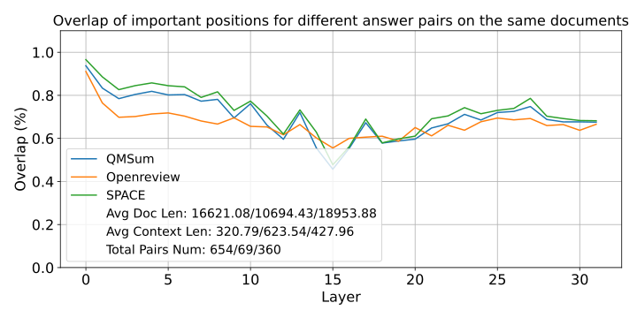
论文由此得出：重要的位置会随指令改变，所以那些依赖固定重要性或固定策略的静态压缩方法（H2O、Scissorhands、FastGen）很难跟上这种变化；压缩必须“看情境”，而 SnapKV 用观察窗口正好能捕捉到它。NeurIPS 正式版还补了一句：与问题无关的压缩方法在“画像时”和“推理时”的注意力分布会对不上，从而损害生成质量。
把问题挪到前面（§4.2.2）。同样三个数据集，作者比较两种提示格式：问题放在长文档前面，或者放在后面，在观察窗口大小相同的情况下计算回答的平均重合率。
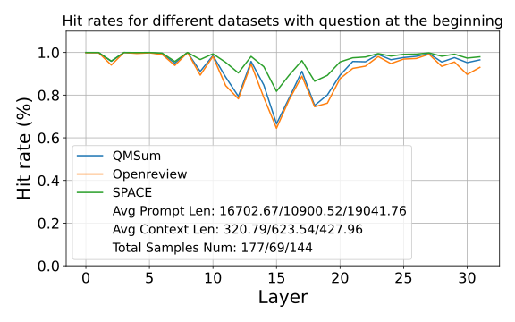
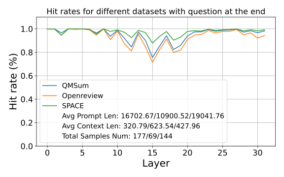
- 观察窗口里到底有什么？§4.2.1 明确写着观察窗口由“指令和对应的回答”组成，也就是说窗口里包含了一部分回答。实际使用时，压缩发生在回答生成之前，窗口里只有提示的末尾。§4.2.2 只说“窗口大小相同”，没有说清窗口内容。如果窗口里含有回答的开头，问题放在前面时重合率仍然很高就不那么意外了。所以这两张图更适合看作上限，真实效果要看后面 LongBench 这类端到端的准确率。
- 图 4 的另一面。论文用图 4 说明静态方法不行，但它同样说明了 SnapKV 自己的局限：压缩是针对这一个问题做的。中间层对不同问题的重合率只有一半左右，意味着为问题 A 压缩好的缓存，拿去回答同一篇文档上的问题 B，可能有一半该看的位置已经被丢掉了。多轮对话、同一文档上的多个提问、前缀缓存复用，都会碰到这个问题（见“后来怎么样了”）。
4.3 用池化做聚类：不能只挑分数最高的那几个点
Olsson 等（2022）发现 Transformer 里有一类归纳头（induction head）：如果前文出现过“A B”，那么当前 token 是 A 时，归纳头会去找前文里 A 后面的那个 token B，并把它预测出来。模型照抄一段原文（电话号码、人名、代码、引文）时，就是靠这种机制一个 token 接一个 token 地往下抄：抄出第一个 token 后，下一步要去看原文里它后面的那个 token，依此类推。
这对 KV 压缩意味着：问题在注意力里“指向”的，往往只是相关片段的开头；片段剩下的部分，要等生成时一步一步顺着抄过去才会被用到。如果只留下片段开头那一个位置，抄写链就断了。
论文正是这样论证的：大模型的检索和生成，一方面依靠注意力权重高的特征，另一方面要靠归纳头把上下文里的其余部分复制出来。因此只挑分数最高的特征，只会留住细节的一部分，信息就不完整了。论文举的例子是电话号码：压缩后模型可能只取回了国家区号，剩下的号码是自己编的。§5.2 的实验也表明只挑最高分是不够的。所以作者在选之前加了一层池化，实现一种细粒度的“聚类”（伪代码第 13 行）。
池化就是拿一个宽度为 \(k\) 的窗口沿序列滑动，每到一个位置，就用窗口里 \(k\) 个数的最大值（最大池化）或平均值（平均池化）替换这个位置的值。SnapKV 用的步长是 1、两边各补 \(\lfloor k/2\rfloor\) 个位置，所以输出长度不变：每个位置的新分数，等于它自己和左右各 \(\lfloor k/2\rfloor\) 个邻居里的最大值（或平均值）。最大池化的效果是让高分位置把分数“借”给邻居：一旦某个峰被选中，它两侧的邻居也会以同样的分数一起入选。
| 位置 | 1 | 2 | 3 | 4 | 5 | 6 | 7 | 8 | 9 | 10 | 11 | 12 |
|---|---|---|---|---|---|---|---|---|---|---|---|---|
| 原始票数 | .07 | .30 | .06 | .02 | .50 | .03 | .03 | .02 | .08 | .06 | .28 | .05 |
| 不池化，取前 5 | ✓ | ✓ | ✓ | ✓ | ✓ | |||||||
| 最大池化（核 = 5） | .30 | .30 | .50 | .50 | .50 | .50 | .50 | .08 | .28 | .28 | .28 | .28 |
| 池化后，取前 5 | ✓ | ✓ | ✓ | ✓ | ✓ |
这个玩具例子（本站构造，不是论文数据）把池化的作用和代价都显示出来了。不池化时，号码只留下了开头的位置 5，后面的 6–8 和其他噪声位置分数差不多，都没进前 5；生成时模型抄完开头就断了线。池化之后，位置 5 的高分被“借”给了左右各两个邻居，3–7 一起入选，号码的前三段都保住了。代价有两个：一是预算花在了位置 3、4 这些左侧邻居上（号码的开头在左边界，左侧邻居多半没用），二是位置 2、11 这两个孤立的高分点被挤掉了。真实场景里预算有上千个位置，而池化核只有 5–13，所以能同时保住很多个“峰及其邻居”，代价没有这个例子这么明显。论文在 §5.2 还提到，最大池化和平均池化在实验里没有显著差别。
5 实验：压到 1024 个位置，还能答对多少，又能快多少
5.0 实验总览
| 实验 | 模型 | 提示 KV 预算 | 窗口 / 池化核 | 硬件与实现 | 看什么 |
|---|---|---|---|---|---|
| 大海捞针（§5.1.1） | LWM-Text-Chat-1M（7B，多头注意力） | 1024 | 16 / 5 | 单张 A100-80GB，HuggingFace 原生实现改几行 | 1K–380K 文档里的单句检索 |
| 解码速度（§5.1.2） | LWM-Text-Chat-1M | 2048 | 未写 | 单张 A100-80GB | 每 token 解码延迟，批 1/2/4/8，生成 512 个 token |
| 池化消融（§5.2） | Mistral-7B-Instruct-v0.2（GQA） | 未写 | 16 / 5（最大池化） | 未写 | LongEval-Lines，4K–30K |
| LongBench（§5.3） | LWM-Text-Chat-1M、LongChat-7B-v1.5-32K、Mistral-7B-Instruct-v0.2、Mixtral-8x7B-Instruct-v0.1 | 1024 / 2048 / 4096 | 32 / 7（最大池化） | 未写 | 16 个任务的分数，对比 H2O（预算 4096） |
| Command-R（§5.4，仅 arXiv 版） | Command-R（35B，128K） | 4096 | 64 / 13 | 未写 | 大海捞针、RAG（Cohere 内部基准） |
| 与 Medusa 叠加（§5.5；正式版移到附录 A） | Mistral-7B-Instruct-v0.2 + TGI 训练的 Medusa 头 | 未写 | 未写 | 基线为 HuggingFace 朴素解码 | 每 token 延迟，提示 4K–10K |
| 超参数敏感性（仅正式版表 2） | Mistral-7B-Instruct-v0.2 | 1024 | 窗口 16/32/64，核 1/5/7/9 | 未写 | LongBench 中 13 个任务 |
| 预填充开销（仅正式版附录 B） | Mistral-7B-Instruct-v0.2 | — | — | H100 | 预填充时间与峰值显存，5K–45K |
5.1 LWM-Text-Chat-1M：大海捞针与解码速度
LWM-Text-Chat-1M 是一个 7B 的指令微调模型，上下文长达 100 万 token（它是从 LLaMA-2-7B 继续训练来的，用多头注意力）。论文用它做压力测试，并测算法带来的效率提升。
大海捞针（Needle-in-a-Haystack，Kamradt 2023）的做法是：找一篇很长的无关文档当“干草堆”，在其中某个深度（0% 是开头，100% 是末尾）插入一句话当“针”，然后在最后提一个问题，答案就是这句话的内容。把文档长度和插入深度各取若干档，就得到一张热力图，每格是这个组合下答对的程度。一般来说，针放在文档中间时最难找到。这个测试只检验“能不能从长文里准确取回一句话”，不检验理解、推理或总结能力。
大海捞针。作者把文档长度一直拉到 380K 个 token，这是单张 A100-80GB 能处理的最长输入。SnapKV 的设置是：提示 KV 只留 1024 个位置，最大池化核为 5，观察窗口为 16。按 380K 计算，压缩比约为 370 倍（推算；论文写的是 380 倍）。
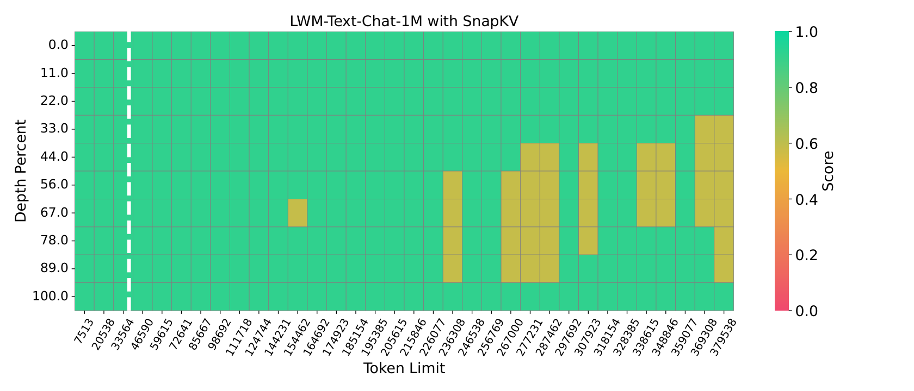
为什么不压缩的模型在 33K 就放不下，而 SnapKV 能跑到 380K？完整的 KV 在 380K 时约 199 GB（推算），当然放不下。SnapKV 是在预填充时逐层压缩的：每一层先算出这一层完整的 K、V，用它做完这一层的注意力，然后只把压缩后的 1024 个位置存进缓存，完整的那份随即释放。所以任一时刻显存里只需要容纳一层的完整 KV（380K 时约 6.2 GB，推算）加上其他层已经压缩好的小缓存，再加上权重和中间激活。
- 图里没有“完整 KV”的对照：33K 以后原始实现根本跑不了，所以“几乎没有下降”是和满分比，而不是和同长度下的完整 KV 比。33K 以内的格子也都是 SnapKV 的结果。
- 大海捞针对 SnapKV 是很有利的测试：针是一句和上下文明显不同的话，问题就在提示末尾的观察窗口里，问题的 query 很容易“指向”针所在的位置。更难的检索见 §5.2 的 LongEval-Lines。
解码速度和显存上限。作者在不同批大小下测 LWM-Text-Chat-1M 的解码延迟。SnapKV 的提示 KV 预算设为 2048，生成长度固定为 512 个 token，保证比较公平。
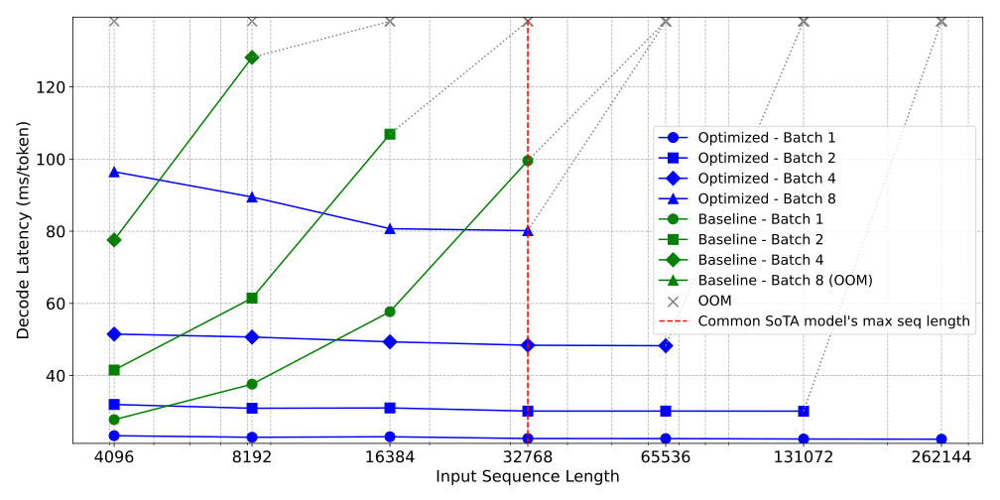
| 每 token 解码延迟（毫秒，从图上读出） | 4K | 8K | 16K | 32K | 64K | 128K | 256K |
|---|---|---|---|---|---|---|---|
| 基线，批 1 | ≈28 | ≈38 | ≈58 | ≈100 | OOM | ||
| 基线，批 2 | ≈42 | ≈62 | ≈107 | OOM | |||
| 基线，批 4 | ≈78 | ≈128 | OOM | ||||
| 基线，批 8 | OOM | ||||||
| SnapKV，批 1 | ≈23 | ≈23 | ≈23 | ≈22 | ≈22 | ≈22 | ≈22 |
| SnapKV，批 2 | ≈32 | ≈31 | ≈31 | ≈30 | ≈30 | ≈30 | OOM |
| SnapKV，批 4 | ≈51 | ≈51 | ≈49 | ≈48 | ≈48 | OOM | |
| SnapKV，批 8 | ≈96 | ≈89 | ≈81 | ≈80 | OOM |
论文从这张图读出两点。第一，基线的解码延迟随输入长度线性上升，而 SnapKV 保持不变，因为压缩后提示的 KV 大小固定，和输入多长无关，推理过程中也不再更新。例如输入 16K、批大小 2 时，基线每个 token 超过 100 毫秒，SnapKV 始终低于 40 毫秒，论文说约快 3.6 倍（按上表读数是 107 对 31，约 3.4–3.5 倍，在读图误差之内）。第二，同样的批大小下，SnapKV 能解码长得多的输入：批大小 2 时，基线超过 16K 就 OOM，SnapKV 能到 131K，论文说约提升 8.2 倍（按 2 的幂档位算是 8 倍）。
表里还有一个论文没有讨论的现象：SnapKV 的延迟随批大小几乎成倍增加（批 1 约 23 毫秒，批 2 约 31，批 4 约 50，批 8 约 80–96）。在一个接近带宽极限的实现里，解码主要在读权重，把批从 1 加到 2 几乎不该增加时间；按 A100-80GB 约 2 TB/s 的带宽，批 1 时读一遍权重和压缩后的缓存只要约 7 毫秒（推算）。这说明这里测的 HuggingFace 实现离硬件极限还很远，其中的开销会影响加速倍数的含义，§5.7 再展开。
5.2 池化消融：在同格式的干扰项里找答案
作者在 Mistral-7B-Instruct-v0.2 上检验池化到底有没有用，用的是改过的 LongEval-Lines 基准（随机生成键值对，分数取平均）。每一行文本的格式都一样，比如 “line makeshift-penguin: REGISTER_CONTENT is <10536>”，键是一个“形容词-名词”组合，值是一个随机的五位数；模型要根据给定的键答出对应的值。它比大海捞针难，因为干扰项和目标格式完全相同，而大海捞针里的针和周围的文字差别很明显。设置是最大池化、核为 5，观察窗口为 16。
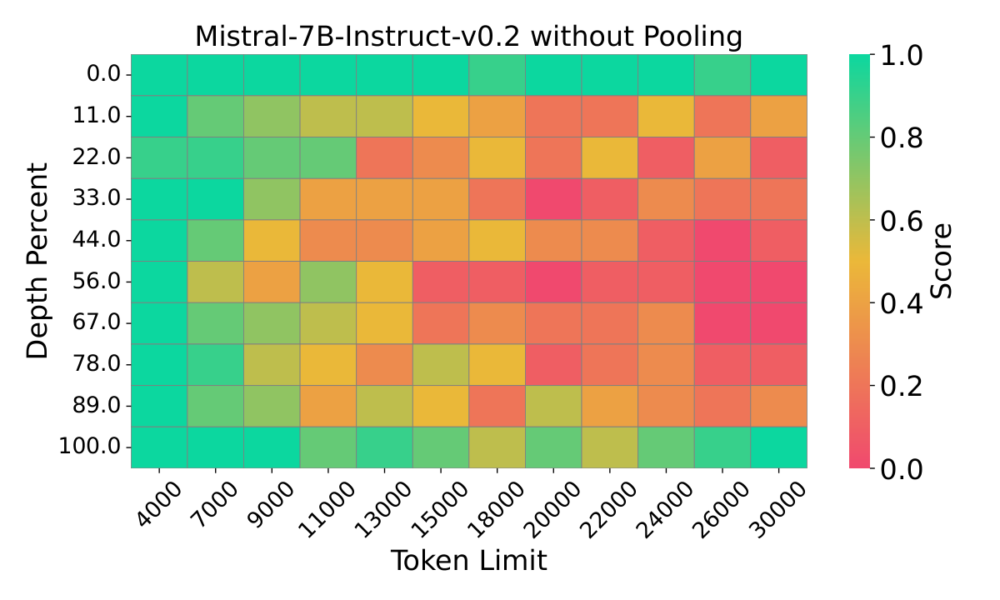
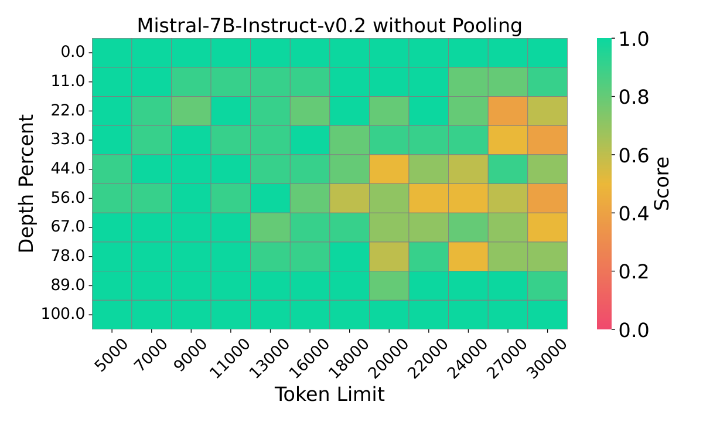
论文对此的解释和 §4.3 一致：注意力往往给关键片段的开头更高的权重，而模型要靠复制开头周围的 token 来保持内容完整；不池化的压缩打断了这种复制，可能导致答案只对一部分。比如五位数的值只答对了前两位。
5.3 LongBench：16 个长文本任务上的准确率
LongBench（Bai 等，2023）是一个多任务的长上下文评测集。论文用了其中 16 个英文和代码任务，分成六类：单文档问答（NarrativeQA、Qasper、MultiFieldQA-en）、多文档问答（HotpotQA、2WikiMQA、MuSiQue）、摘要（GovReport、QMSum、MultiNews）、少样本学习（TREC、TriviaQA、SAMSum）、合成任务（PassageCount、PassageRetrieval-en）和代码补全（LCC、RepoBench-P）。各任务分别用 F1、ROUGE-L、准确率或编辑相似度打分，分数都在 0–100 之间。超过模型最大长度的输入从中间截断（官方配置里 32K 模型截到 31,500 个 token，LWM 不截断）。大多数任务的问题放在文档之后，正好落在观察窗口里。
参与评测的四个模型是 LWM-Text-Chat-1M（上下文 1M）、LongChat-7B-v1.5-32K、Mistral-7B-Instruct-v0.2 和 Mixtral-8x7B-Instruct-v0.1（后三个上下文 32K）。每个模型都把提示 KV 分别压到 1024、2048、4096 个位置，用最大池化、核 7、观察窗口 32。对照组 H2O 的提示预算设为 4096。原文表 1 给出了 4 个模型 × 5 种设置 × 16 个任务的全部分数，下面把它压成每种设置的 16 任务平均分，并单独列出掉分最多的 GovReport（平均分是本站按表 1 算的，推算）：
| 模型 | 完整 KV | SnapKV 1024 | SnapKV 2048 | SnapKV 4096 | H2O 4096 |
|---|---|---|---|---|---|
| LWM-Text-Chat-1M 平均 | 30.21 | 29.25 | 29.77 | 30.13 | 26.22 |
| LongChat-7B-32K 平均 | 36.36 | 34.41 | 35.40 | 35.89 | 33.90 |
| Mistral-7B-v0.2 平均 | 42.56 | 41.45 | 41.99 | 42.38 | 40.45 |
| Mixtral-8x7B 平均 | 48.01 | 47.09 | 47.72 | 47.96 | 44.02 |
| GovReport：LWM | 27.97 | 19.79 | 21.60 | 25.34 | 25.77 |
| GovReport：LongChat | 30.89 | 23.45 | 26.30 | 28.55 | 27.55 |
| GovReport：Mistral | 32.85 | 25.89 | 28.81 | 30.74 | 30.00 |
| GovReport：Mixtral | 34.25 | 27.77 | 30.19 | 32.64 | 29.76 |
从这张表可以读出四件事。
第一，平均掉分很小，预算越大越接近完整 KV。预算 1024 时，四个模型的平均分比完整 KV 低 0.9–2.0 分；预算 4096 时只低 0.06–0.47 分。论文据此说，即使只留 1024 个位置，16 个数据集上的性能下降也可以忽略，有的模型在个别任务上甚至超过了完整 KV（比如 Mistral 在 PassageRetrieval 上从 86.98 升到 88.56）。
第二，掉分集中在摘要任务。四个模型在 GovReport 上，预算 1024 时都掉了 6.5–8.2 分，是所有任务里掉得最多的。原因不难理解：“写一份摘要”这类指令并不指向文档里某几个具体位置，而是需要整篇文档的覆盖面；观察窗口能挑出“问题在看哪里”，但摘要的问题“哪里都要看”。有意思的是，在 LWM、LongChat 和 Mistral 上，H2O 4096 在 GovReport 上反而比 SnapKV 1024 和 2048 都好，因为累计注意力挑出的位置分布得更广。
第三，同样或更小的预算下，SnapKV 明显好于 H2O。在相同的 4096 预算下，四个模型上 SnapKV 的平均分都比 H2O 高 1.9–3.9 分（推算）。论文强调，在 Mistral 上，只用 1024 个位置的 SnapKV 在 16 个任务中的 11 个上超过了用 4096 个位置的 H2O；按表 1 数一下，其他三个模型分别是 LWM 11 个、LongChat 10 个（另有 1 个持平）、Mixtral 12 个（另有 1 个持平）。H2O 有几处掉得很厉害，比如 LWM 的 MultiFieldQA-en 从 40.94 掉到 20.01，Mixtral 的 HotpotQA 从 47.77 掉到 34.76。
第四，压缩比到底是多少，论文前后不一致。正文说“这四个模型的平均输入长度约 13K，所以 1024 的预算压缩了 92%，4096 压缩了 68%”。但 NeurIPS 正式版在同一节里又说 LongBench 的平均提示长度在 5K–7K 之间，附录 D 的统计表里各数据集平均长度也都在 4.3K–7.1K 之间（而且表中 HotpotQA 和 GovReport 两行的数字完全相同，像是复制错误）。如果平均长度只有 6K 左右，4096 的预算就只压缩了三分之一左右，而且有相当一部分样本本来就短于 4096，按官方代码根本不会被压缩。所以 4096 那一列能说明的问题有限，真正检验压缩能力的是 1024 那一列。
5.4 Command-R：大海捞针与 RAG（只在 arXiv 版里）
这一组实验来自合作方 Cohere，用的是 Cohere 开源的 Command-R：350 亿参数，上下文 128K，主要面向检索增强生成（RAG）这类长上下文任务。所有实验的 KV 上限都是 4096，池化核 13，观察窗口 64；按序列长度不同，压缩比在 2 倍到 32 倍之间。NeurIPS 正式版删掉了这一整节。
检索增强生成（RAG）是先用检索系统从文档库里找出和问题相关的若干篇文档，拼进提示，再让模型据此回答。上下文窗口越大，能放进去的文档越多，回答可能越准，但显存和延迟也越高。所以 RAG 是“提示长、回答短、答案只依赖其中几篇文档”的典型场景，正是 SnapKV 瞄准的情况。
| 测试 | 设置 | 相对完整 KV 的变化 |
|---|---|---|
| 大海捞针（改进版） | 每个长度和深度组合都打乱上下文的组成，重复 8 次取平均，最长 128K（压缩 32 倍） | 9.866 → 9.819（−0.5%） |
| RAG 引用（Cohere 内部基准） | 每个提示配 100 篇文档（含正确文档和负例），20K–40K 个 token，压缩 5–10 倍；看能否引用正确文档 | F1 −1.2% |
| RAG 生成（bioasq，30 篇文档，约 8K） | 正确文档放在第 0、14、30 位，各重复 3 次 | 平均 −1.7%（单项 −3.4% 到 0%） |
| RAG 生成（100 篇，约 14K） | 同上 | 平均 −0.6% |
| RAG 生成（200 篇，约 24K） | 同上 | 平均 +5.4%（三个位置都提高） |
| 端到端 RAG（改编的 HotpotQA，维基百科） | Cohere 嵌入检索 200 篇 → 重排序留 100 篇，平均约 16K（压缩约 4 倍） | F1 −2.1% |
论文的解读是：SnapKV 在 RAG 里基本保住了 Command-R 的能力（引用任务保住了约 98.8%），也没有出现“答案放在中间就找不到”（lost in the middle）的毛病。文档多到 200 篇时反而提高了 5.4%，作者推测压缩去掉了负例文档带来的噪声，让注意力更集中在相关信息上。
5.5 和 Medusa 叠加：压缩 KV 也能帮投机解码
投机解码（详见投机解码精读）先用一个便宜的方法一次猜出好几个 token，再让大模型用一次前向计算同时验证它们，猜对几个就一次前进几个。Medusa（详见 Medusa 精读）的做法是在模型最后加几个额外的“头”，分别预测后面第 1、2、3……个 token，再用树形注意力一次验证多条候选。它和 SnapKV 有三位作者相同（Yuhong Li、Tianle Cai、Deming Chen），代码也都放在 FasterDecoding 组织下。
问题在于，验证时每一步要同时处理多个候选 token，每个候选都要对整段长上下文算注意力。上下文一长，这部分计算就成了新的瓶颈，投机解码的收益会被吃掉。
SnapKV 让提示的 KV 保持固定大小，正好缓解了这个问题。实验用 Mistral-7B-Instruct-v0.2，配上 TGI 训练好的 Medusa 头；数据是 QASPER 的一个子集，固定的指令是“总结这篇论文”；按 LongBench 的方式从中间截断，得到 4K 到 10K 的提示；最多生成 128 个 token。
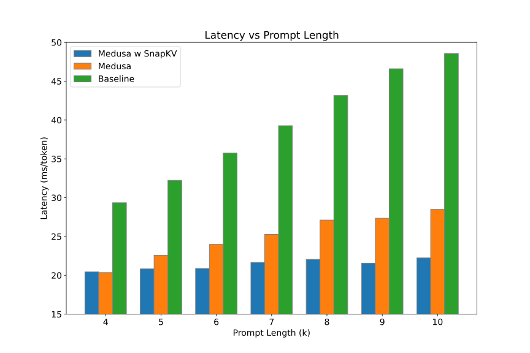
论文报告：提示 10K 时，Medusa 加 SnapKV 比只用 Medusa 快 1.3 倍，比朴素解码快 2.2 倍。这说明 KV 压缩和投机解码可以叠加，在长上下文场景下尤其有用。
5.6 NeurIPS 正式版新增：超参数敏感性与预填充开销
正式版的 §5.4 换成了超参数敏感性分析：在 Mistral-7B-Instruct-v0.2 上固定预算 1024，改变观察窗口大小（16、32、64）和池化核大小（5、7、9），再加一组核为 1（等于不池化），在 LongBench 的 13 个任务上比较（不池化那组只测了 9 个非检索类任务，检索类在 §5.2 已经测过）。下表摘出其中 7 个任务：
| 配置（预算 1024） | GovReport | MultiNews | TREC | SAMSum | PRe | Lcc | RB-P |
|---|---|---|---|---|---|---|---|
| 窗口 32，核 7（表 1 的配置） | 25.89 | 26.11 | 69.5 | 42.06 | 88.56 | 55.65 | 51.87 |
| 窗口 16，核 7 | 28.2 | 26.13 | 67.0 | 40.9 | 91.56 | 60.55 | 50.25 |
| 窗口 64，核 7 | 26.41 | 26.18 | 67.0 | 40.85 | 91.56 | 60.79 | 50.25 |
| 窗口 32，核 5 | 29.65 | 24.55 | 64.29 | 40.21 | 90.49 | 57.06 | 48.57 |
| 窗口 32，核 9 | 26.58 | 24.61 | 65.33 | 39.74 | 91.56 | 60.56 | 50.25 |
| 窗口 32，核 1（不池化） | 33.23 | 26.04 | 67.33 | 40.9 | 91.56 | 60.66 | 50.25 |
论文的结论有两条：不同配置在不同任务上各有胜负，没有哪个配置处处最好，说明 SnapKV 对超参数不敏感；在 9 个非检索任务中，有 8 个是用了池化的准确率更高，说明池化很重要。
- 如果拿“窗口 32、核 7”这一行（也就是表 1 用的配置）和“核 1”逐项比，在 9 个非检索任务里池化只赢了 4 个（MultiNews、TREC、SAMSum、RB-P），输了 5 个。只有拿五种池化配置在每个任务上各自最好的那个去比，才接近论文说的 8/9。从五个配置里挑最好的再和一个配置比，本身就对池化有利。
- GovReport 上，不池化（33.23）比所有池化配置都好，甚至超过了完整 KV（32.85）。这和上面“摘要任务需要覆盖面”的分析一致：池化把预算集中在少数峰附近，覆盖的范围反而变窄了。
- “窗口 32、核 7”这一行和表 1 完全相同，而其他几行在 PassageRetrieval、Lcc 上普遍高出 3–5 分，可能来自不同的评测设置，行与行之间的比较要谨慎。
正式版附录 B 在 H100 上测了 Mistral-7B-Instruct-v0.2 在 5K 到 45K 输入下的预填充时间和峰值显存，结论是加不加 SnapKV 看不出差别：它只多了池化和 top-k 这两个操作，和预填充本身的计算量相比微不足道。这张图只在正式版里，arXiv 版没有。
5.7 结果的份量
这一节把上面的数字放回它们的测量条件里，逐条说明它们能说明什么、不能说明什么。
基线是 HuggingFace 的原生实现，不是推理引擎。所有速度和显存的对比，基线都是 HuggingFace transformers 的实现（论文写的是 “native HuggingFace implementation”），SnapKV 也是在同一实现上改几行代码。论文没有和 vLLM、TensorRT-LLM 这类推理引擎比，也没有和 FlashDecoding 这类长上下文解码内核比。上面已经看到，这个实现离带宽极限很远：批大小翻倍，延迟也接近翻倍。另外，transformers 4.37 的动态缓存每生成一步，就用拼接（torch.cat）生成一份新的缓存张量，相当于把整份 KV 复制一遍；缓存越长，这部分额外开销越大，而 SnapKV 的缓存很小，几乎不受影响（本站对实现的分析，论文没有讨论）。所以“3.6 倍”里有一部分是 HuggingFace 实现本身的开销被一起省掉了。
换到接近带宽极限的引擎上，加速比大约是“每步读的字节数之比”。在一个解码完全受带宽限制的理想实现里，每步时间正比于要读的字节数，可以用下面的示意图估一下：
“8.2 倍”说的是“能跑的最长输入”，不是字节数之比。它是同一个 HuggingFace 实现在批大小 2 时能跑的最长输入之比（16K 对 131K）。按我们的推算，批大小 2、输入 32K 时完整 KV 约 34 GB，加上权重约 48 GB，并没有占满 80 GB；基线在这里 OOM，说明它的显存上限还受预填充阶段其他开销的影响（中间激活、整段提示的输出 logits、缓存拼接时的临时副本等），论文没有给出显存的分解。反过来，SnapKV 在 131K 之后 OOM 时，压缩后的缓存只有几 GB，卡住它的也是预填充的一次性开销，而不是 KV 缓存。
硬件、批大小和负载都很有限。所有速度实验都在单张 A100-80GB 上，批大小 1–8，生成长度固定为 512，没有在线服务的请求到达过程、没有延迟目标（SLO），也没有测吞吐量。显存省下来之后能放进更大的批、从而提高服务吞吐，这是合理的推论，但论文没有测；后来的 KV-Compress 在 vLLM 上做了这件事（见“后来怎么样了”）。
速度数字和准确率数字不在同一个设定下。测速度用的是 LWM 加预算 2048，而这个设定下的准确率只能从 LongBench 表间接看（LWM 预算 2048，16 任务平均低 0.44 分，GovReport 低 6.4 分）以及大海捞针（预算 1024，140K 以内基本全对）。不同任务的代价差别很大：检索类几乎不掉分，摘要类掉得最多。
评测都是“单个问题、问题在最后”的最有利设定。大海捞针、LongEval-Lines 和 LongBench 都是一段长上下文配一个问题，问题落在观察窗口里，压缩完就回答这一个问题。同一份压缩缓存被多个不同问题复用的情况（多轮对话、同一文档多次提问、前缀缓存），论文没有测试，而 §4.2.1 的图 4 已经暗示这时会出问题。
预填充一点也没省。输入越长，预填充越慢，SnapKV 对这一段无能为力。下面 §6 的附录图显示，Mistral-7B 在 95K 输入时预填充就要约 21 秒。如果回答很短，端到端的收益会大打折扣。
GQA 模型的显存收益在官方实现里打了折扣。如 §4.1 所算，官方代码在 Mistral、Mixtral 上先复制 KV 头再压缩，按 1024 预算只省了约 1.5–3.2 倍显存，而不是按位置数算的 6–13 倍。论文的显存数字全部来自多头注意力的 LWM，没有反映这一点。
6 讨论与附录：SnapKV 管不到的地方
论文的讨论很短。作者把 SnapKV 概括为一个简单有效的办法：观察到提示里的特定 token 在生成过程中持续受到每个头的关注，据此压缩 KV 缓存，既取回了关键信息，又提高了处理效率。然后承认两条局限。第一，SnapKV 只作用于生成这一侧，具体说是生成时用到的 KV 缓存，所以它不能提升模型本身的长上下文能力：如果模型本来就处理不好长上下文，压缩不会让它变好。第二，它的设计不涉及提示的处理过程（也就是预填充），所以如果系统连这么长的提示都算不动，SnapKV 也帮不上忙。
附录 A 给出了一组时间分解：Mistral-7B-Instruct-v0.2 处理不同长度的输入，固定生成 512 个 token，分别统计预填充时间和生成时间。
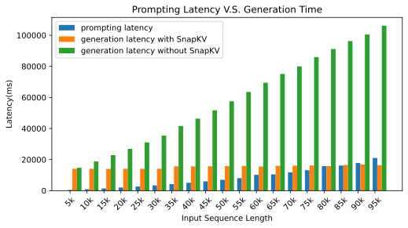
论文的解读是：生成时间占了整个处理时间的大头，不压缩时它随输入线性增长，SnapKV 让它保持不变；在 100K 以内，SnapKV 能让预填充时间和生成时间大致平衡。把同一张图换个角度看，就能看到 SnapKV 的边界：
附录 B（正式版的附录 E）还给了几个生成样例：Mistral-7B 在 SAMSum、Qasper（提示 20,581 个 token）和 HotpotQA（提示 69,412 个 token）上，SnapKV 用 1024、2048、4096 预算生成的回答和完整 KV 的回答几乎一样，HotpotQA 上四种设置都答出了正确的人名。样例是挑出来展示的，不代表平均情况。
后来怎么样了
SnapKV 之后，“预填充结束时用观察窗口投票、一次性压缩提示 KV”成了这一类方法的标准做法，SnapKV 本身也成了几乎所有长上下文 KV 压缩论文都要比较的基线。后续工作大致沿三个方向改进：预算在层和头之间怎么分；怎样让压缩不依赖某一个具体的问题；以及怎样让它真正跑进推理引擎。
预算怎么分：PyramidKV 与 Ada-KV
SnapKV 给每一层、每一个头分同样多的位置，这显然不是最优的：有的层注意力很分散，需要多留；有的层只盯着少数几个 token，留一点就够。
PyramidKV（Cai 等，arXiv 2406.02069；微软研究院页面列为 COLM 2025）观察到一种“金字塔式的信息汇聚”：低层的注意力铺得很开，中间层逐渐集中到特定的上下文，高层几乎只看少数关键 token（包括注意力汇）。于是它给低层分更多预算、高层分更少，层内仍用 SnapKV 式的观察窗口来挑位置。据其摘要，在 LongBench 上只保留 12% 的 KV 就能达到完整 KV 的水平；在只保留 0.7% 的极端设置下，比其他压缩方法在 TREC 上最多高 20.5 个百分点。
Ada-KV（Feng 等，arXiv 2407.11550，NeurIPS 2025）把预算的分配细化到头：先推导出淘汰前后注意力输出之差的一个上界，再按每个头注意力的集中程度在头之间分配预算。它可以即插即用地套在 SnapKV、PyramidKV 上（叫 Ada-SnapKV、Ada-Pyramid）。它还专门解决了 §4.1 说的 GQA 问题：同一组的 query 头先对票数取平均，再统一挑位置，不再复制 KV 头；论文报告，和复制 KV 头的做法相比，这样在 Llama-3.1-8B 上缓存能缩小 4 倍。Ada-KV 的评测同时包含“知道问题”和“不知道问题”两种设定，作者说在后者上提升最明显。
不依赖问题：多轮对话与缓存复用的难题
§4.2.1 的图 4 已经显示，不同问题会让模型看不同的位置。SnapKV 按“当前这个问题”压缩，那么同一份压缩缓存被下一个问题复用时会怎样？这在实际系统里很常见：多轮对话里，第二轮的问题可能需要第一轮压缩时被丢掉的内容；RAG 或文档问答里，同一篇长文档会被问很多次；推理引擎的前缀缓存（SGLang 的 RadixAttention、vLLM 的自动前缀缓存，见 SGLang 精读）正是靠“同一段前缀的 KV 在不同请求间共享”来省预填充的，而按问题压缩过的 KV 天然不能共享给别的问题。
KVzip（Kim 等，arXiv 2505.23416，NeurIPS 2025 口头报告）直接拿 SnapKV 做了这个实验：在 SQuAD 的多问题数据上，如果每个问题都重新预填充、重新压缩，SnapKV 的准确率很高；但如果复用第一个问题压缩出来的缓存去回答后面的问题，准确率显著下降。它的摘要说，现有的按问题压缩的淘汰方法在多问题场景下，即使保留 90% 的缓存也会掉点。KVzip 的办法是改用与问题无关的打分：看每个 KV 对“让模型把原文复述出来”有多重要，据此淘汰；作者报告缓存缩小 3–4 倍、FlashAttention 解码延迟降低约 2 倍，性能损失可以忽略。
SCBench（arXiv 2412.10319，ICLR 2025）从评测的角度系统地检验了这件事：它专门构造多轮、共享上下文的任务，把长上下文方法按 KV 缓存的生成、压缩、检索、加载四个环节分类。它的结论是：只保留少于 O(n) 的 KV（SnapKV 这类淘汰方法属于此类）在单轮问答里表现不错，但在多轮交互里明显吃亏；保留全部 KV、只在预填充阶段做稀疏计算的方法则更稳健。
NVIDIA 的 kvpress 库在设计评测流程时也专门处理了这一点：它只压缩上下文、不把问题放进被压缩的部分，并在说明里指出，否则会不公平地偏向 SnapKV 这类依赖问题的方法。
进入工具与引擎
- 研究工具。NVIDIA 的 kvpress 把几十种 KV 压缩方法实现成统一的“press”，其中 SnapKVPress 按“最后若干个 query 的平均注意力”打分，还有 PyramidKVPress 和可以套在其他方法上的 AdaKVPress。KVCache-Factory（原 PyramidKV 仓库，2024-11 改名）在同一接口下实现了 SnapKV、PyramidKV、H2O、StreamingLLM、Ada-KV 等，并提供按 KV 头存储（GQA 友好）的选项。
- 推理引擎。截至 2026-10-20，我们没有找到 vLLM 或 SGLang 上游原生支持 SnapKV 式提示压缩的证据：vLLM 在 2024-06 有一份提议“稀疏 KV 缓存框架”的 RFC（issue #5751），动机里列了 SnapKV，但仍处于 open 状态。本站的理解是，难点有几处：打分要用到注意力权重，而引擎里的 FlashAttention 类内核并不输出它，需要额外计算；引擎按固定大小的块统一管理所有层、所有头的缓存，PyramidKV、Ada-KV 这类让不同层、不同头保留不同数量位置的改进和这种统一的块结构冲突；压缩过的缓存又不能参与前缀共享。KV-Compress（Rehg，arXiv 2410.00161）专门处理了其中的块结构问题：在分页缓存里按块淘汰、允许每个头有不同的压缩率，并集成进 vLLM，报告总吞吐量最多提高 5.18 倍。
- 与量化正交。KV 压缩减少“存多少个位置”，KV 量化减少“每个位置用几个比特”（见 KIVI 精读），两者可以叠加。
回头看，SnapKV 留下的最重要的东西是那个观察：问题出现之后，模型要看哪里在生成之前就基本定了。它让“按问题挑 KV”变得又简单又便宜，也因此把“问题换了怎么办”这个难题留给了后来的工作。
作者
单位按论文署名。背景只列可公开查证的信息：作者主页、实验室与机构页面、机构新闻。
影响力
- 引用：见页首（Semantic Scholar 快照）。
- 发表：NeurIPS 2024 主会（poster）。arXiv 首版 2024-04-22，v2 发布于 2024-06-17（本页依据 v2）。正式版与 v2 有实质差别：删去了 Command-R 一节，把 Medusa 实验移到附录，新增超参数敏感性（表 2）、预填充开销（附录 B）和 LongBench 长度统计（附录 D），并改写了 \(k\) 的定义。
- 开源：FasterDecoding/SnapKV 仓库 336 个 star、37 个 fork（截至 2026-10-20），Apache-2.0 许可；仓库创建于 2024-03-23，最近一次推送在 2025-07。实现方式是给 HuggingFace transformers 4.37 的 LLaMA、Mistral、Mixtral 打补丁。
- 采用：被 NVIDIA kvpress、KVCache-Factory 等 KV 压缩工具库实现，是 PyramidKV、Ada-KV、KVzip、SCBench 等后续工作的标准对比基线。截至 2026-10-20，未见 vLLM、SGLang 上游原生集成（vLLM 的相关 RFC #5751 仍为 open）。
延伸阅读
- 相关精读：KIVI、NSA 原生稀疏注意力、vLLM / PagedAttention
- 推理基础：KV 缓存有多大、什么形状：§1 背景的展开版，含简答题。
- KV 缓存分层存储：不丢 KV、而是把它放到 CPU 内存或 SSD 的另一条路线。
- 返回论文书架
原文：Yuhong Li, Yingbing Huang, Bowen Yang, Bharat Venkitesh, Acyr Locatelli, Hanchen Ye, Tianle Cai, Patrick Lewis, Deming Chen. SnapKV: LLM Knows What You are Looking for Before Generation. NeurIPS 2024. arXiv:2404.14469，以 CC BY 4.0 许可发布。 本页标注“原文图”的图片取自 arXiv HTML 版（v2）原文，未做修改，依 CC BY 4.0 使用并署名；图注为本站撰写。NeurIPS 正式版独有的表格和附录内容只以文字和数字转述。其余文字、表格与示意图为本站撰写的精读笔记，并非翻译。数字与结论以原文为准。